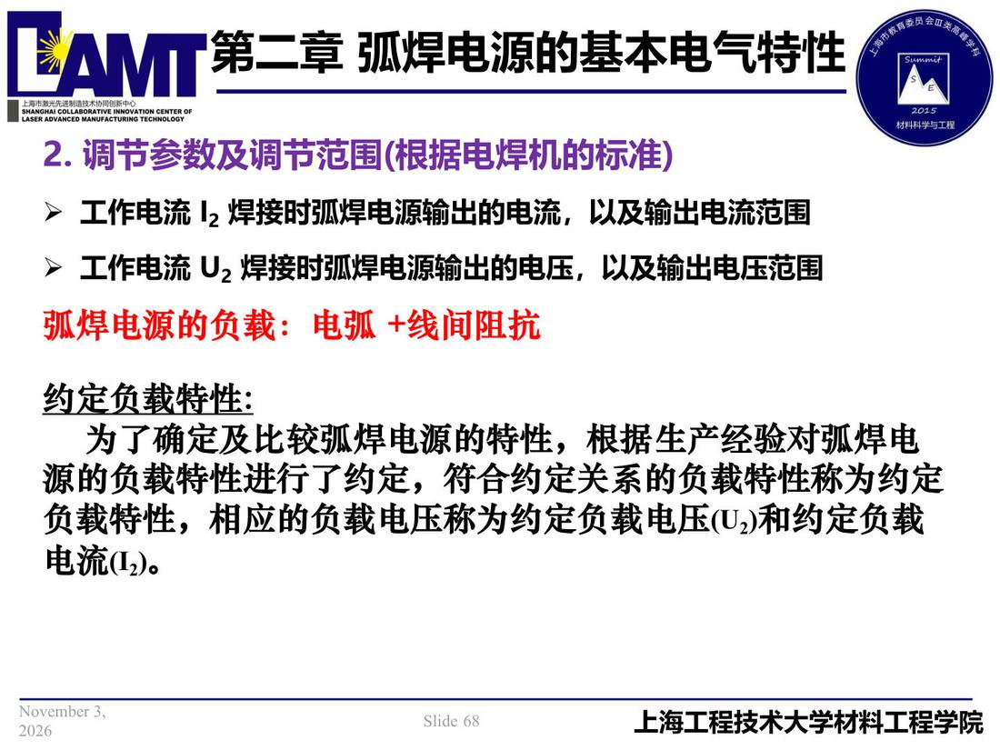

02 第2章 基本电气特性/p068 2. 调节参数及调节范围(根据电焊机的标准)
p068 2. 调节参数及调节范围(根据电焊机的标准)
📄 原文：📄 弧焊电源 课件（PDF 第 68 页）（幻灯片 68/273；PDF 第 68 页）
2. 调节参数及调节范围(根据电焊机的标准)

讲义原文
- 工作电流 I2 焊接时弧焊电源输出的电流，以及输出电流范围
- 工作电流 U2 焊接时弧焊电源输出的电压，以及输出电压范围 弧焊电源的负载：电弧 +线间阻抗
约定负载特性:为了确定及比较弧焊电源的特性，根据生产经验对弧焊电源的负载特性进行了约定，符合约定关系的负载特性称为约定负载特性，相应的负载电压称为约定负载电压(U2)和约定负载电流(I2)。
本页标红（老师强调）
- 弧焊电源的负载：电弧 +线间阻抗